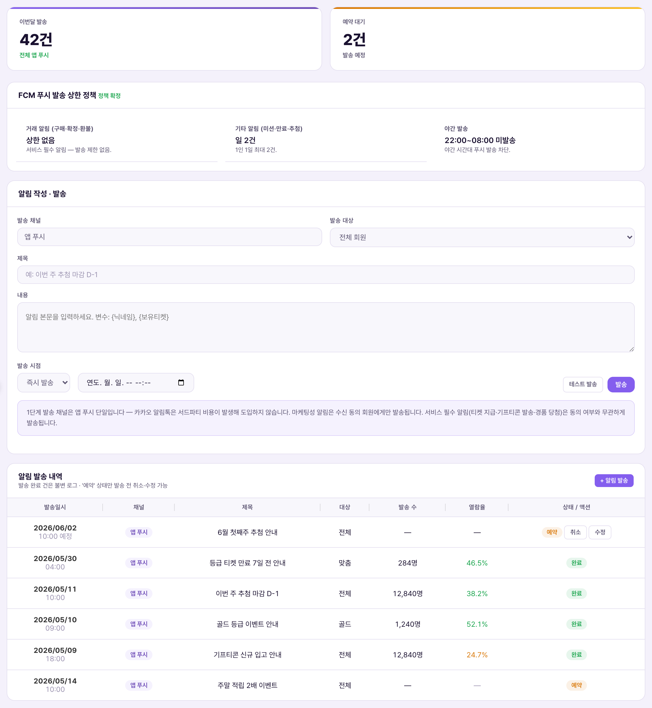

그룹Nhóm: 콘텐츠Nội dung
작성됨Đã viết
작성Viết bởi: 2026.07.22 (Dispatch C조)
근거Căn cứ: 실제 CMS 데모 알림 관리 화면 + 소스 코드(notiSend) + 마스터 정책서(푸시 알림 상한, 3종 스위치)Demo CMS thực tế + mã nguồn (notiSend) + Tài liệu chính sách gốc (giới hạn push, 3 công tắc)
1. 한 줄 정의1. Định nghĩa một dòng
알림 관리는 운영자가 앱 푸시·카카오 알림톡을 직접 작성해서 회원에게 발송하는 화면입니다. 공지사항이 "회원이 앱에 들어와야 보이는 글"이라면, 알림은 기기로 바로 날아가는 푸시입니다. 이 화면에는 발송 통계, 발송 상한 정책, 새 알림 작성·발송, 발송 내역 4개 블록이 있습니다.Quản lý push là màn vận hành viên tự soạn push app·Kakao AlimTalk rồi gửi cho hội viên. Nếu thông báo (notice) là "bài viết chỉ thấy khi mở app" thì push là thông báo bắn thẳng đến thiết bị. Màn này có 4 khối: thống kê gửi, chính sách giới hạn gửi, soạn·gửi push mới, lịch sử gửi.
2. CMS 화면 구성2. Cấu trúc màn hình CMS

알림 관리 화면 — 실제 CMS 데모 캡처 (2026-07-22)Màn Quản lý push — chụp thực tế từ CMS demo (2026-07-22)
| 요소Thành phần | 의미Ý nghĩa | 바꾸면 생기는 일Điều gì xảy ra khi thay đổi |
|---|
| 발송 채널Kênh gửi | 앱 푸시 / 카카오 알림톡(연동 회원) / 푸시+알림톡 동시 3종3 loại: push app / Kakao AlimTalk (thành viên liên kết) / cả push+AlimTalk | 알림톡은 카카오 연동 회원에게만 갈 수 있는 채널 — 미연동(게스트) 회원은 알림톡 수신 불가AlimTalk chỉ đến được thành viên liên kết Kakao — thành viên chưa liên kết (khách) không nhận được AlimTalk |
| 발송 대상Đối tượng gửi | 전체 회원 / 카카오 연동 회원 / 미연동(게스트) 회원 / 30일 미접속 / 신규 가입(7일 이내) / 구매 이력 있는 회원Toàn bộ / liên kết Kakao / khách chưa liên kết / 30 ngày không vào / mới đăng ký (trong 7 ngày) / đã từng mua hàng | 선택한 대상 인원 수를 실제로 집계해서 발송 수에 반영(확인됨) — 다만 실제 발송 자체는 아래 6번 참고Đếm thật số người thuộc đối tượng đã chọn và phản ánh vào số lượng gửi (đã xác nhận) — nhưng việc gửi thật thì xem mục 6 bên dưới |
| 제목 · 내용Tiêu đề · Nội dung | 알림 문구. 내용에 {{닉네임}}, {{보유티켓}} 같은 변수 사용 가능Nội dung push. Có thể dùng biến như {{닉네임}} (biệt danh), {{보유티켓}} (vé sở hữu) trong nội dung | 제목·내용 중 하나라도 비우면 발송 자체가 막힘Để trống một trong tiêu đề·nội dung thì không gửi được |
| 발송 시점Thời điểm gửi | 즉시 발송 / 예약 발송Gửi ngay / Gửi theo lịch | 예약 선택 시 날짜·시간을 반드시 입력해야 하며, 비우면 "예약 발송 시각을 입력하세요" 경고와 함께 막힘Chọn theo lịch thì bắt buộc nhập ngày giờ, để trống sẽ bị chặn với cảnh báo "Nhập thời điểm gửi theo lịch" |
| 테스트 발송Gửi thử | 전체 대상이 아니라 로그인한 관리자 본인에게만 발송Chỉ gửi cho chính admin đang đăng nhập, không gửi cho toàn đối tượng | 발송 내역에 대상 "테스트(본인)", 상태 "테스트"로 남음 — 실제 회원에게는 나가지 않음Ghi lại trong lịch sử với đối tượng "Test(bản thân)", trạng thái "Test" — không đến tay hội viên thật |
3. FCM 푸시 발송 상한 정책 — 마음대로 여러 번 못 보낸다3. Chính sách giới hạn gửi FCM — Không thể gửi tùy ý nhiều lần
| 알림 종류Loại thông báo | 상한Giới hạn | 설명Giải thích |
|---|
| 거래 알림 (구매·확정·환불)Thông báo giao dịch (mua·xác nhận·hoàn tiền) | 상한 없음Không giới hạn | 서비스에 꼭 필요한 알림이라 몇 번이든 즉시 발송Là thông báo thiết yếu của dịch vụ nên gửi ngay bất kể số lần |
| 기타 알림 (미션·만료·추첨)Thông báo khác (nhiệm vụ·hết hạn·rút thăm) | 1인 1일 최대 2건Tối đa 2 lần/người/ngày | 마케팅성·독려성 알림은 회원 1명당 하루 2건까지만Thông báo mang tính marketing·nhắc nhở chỉ tối đa 2 lần/người/ngày |
| 야간 발송Gửi ban đêm | 22:00~08:00 미발송Không gửi 22:00~08:00 | 거래 알림을 제외한 알림은 야간에 발송 차단Ngoại trừ thông báo giao dịch, các thông báo khác bị chặn gửi vào ban đêm |
앱 쪽 "3종 스위치"와의 관계Liên hệ với "3 công tắc" phía app
회원은 앱 [마이 > 알림 설정]에서 구매 알림(거래성) · 이벤트·티켓 알림(룰렛·응모·당첨·만료 임박) · 마케팅 정보 수신 3개 스위치를 개별로 켜고 끌 수 있습니다. 이 화면에서 마케팅성 알림을 발송해도 "마케팅 정보 수신"을 꺼둔 회원에게는 가지 않으며, 서비스 필수 알림(티켓 지급·기프티콘 발송·경품 당첨)은 수신 동의 여부와 무관하게 발송됩니다(화면 하단 안내 문구 확인됨).Hội viên có thể tự bật/tắt riêng 3 công tắc Thông báo mua hàng (giao dịch) · Thông báo sự kiện·vé (vòng quay·tham gia·trúng thưởng·sắp hết hạn) · Nhận thông tin marketing tại [Của tôi > Cài đặt thông báo] trong app. Dù gửi thông báo marketing ở màn này, hội viên đã tắt "Nhận thông tin marketing" sẽ không nhận được, còn thông báo bắt buộc của dịch vụ (cấp vé·gửi Gifticon·trúng giải) vẫn gửi bất kể có đồng ý nhận hay không (đã xác nhận theo dòng chú thích cuối màn hình).4. 발송 내역 — 완료 건은 불변 로그4. Lịch sử gửi — Log không đổi sau khi hoàn tất
발송 내역 표의 각 행은 발송일시·채널·제목·대상·발송 수·열람율·상태로 구성됩니다. 화면 안내 그대로, 발송 완료 건은 수정·취소가 불가능한 불변 로그이며, "예약" 상태인 건만 발송 전에 취소·수정할 수 있습니다.Mỗi dòng trong bảng lịch sử gồm ngày giờ gửi·kênh·tiêu đề·đối tượng·số lượng gửi·tỷ lệ xem·trạng thái. Như hướng dẫn trên màn hình, các lượt gửi đã hoàn tất là log bất biến, không sửa·hủy được, chỉ những lượt đang ở trạng thái "Đặt lịch" mới hủy·sửa được trước khi gửi.
| 상태Trạng thái | 의미Ý nghĩa |
|---|
| 발송완료Đã gửi | 실제 발송 처리(데모 범위 안에서는 기록·집계까지)가 끝난 건 — 수정·취소 불가Đã xử lý gửi xong (trong phạm vi demo là đến bước ghi log·đếm số) — không sửa·hủy được |
| 예약Đặt lịch | 지정한 시각에 아직 도달하지 않은 건 — 발송 전까지 취소·수정 버튼 노출Chưa đến thời điểm đã đặt — hiện nút hủy·sửa cho đến khi gửi |
| 테스트Test | "테스트 발송"으로 관리자 본인에게만 간 기록Log chỉ gửi cho chính admin qua "Gửi thử" |
5. 운영 시나리오5. Kịch bản vận hành
| 상황Tình huống | 운영자가 하는 일Việc vận hành viên làm | 결과Kết quả |
|---|
| 추첨 마감 D-1 리마인드Nhắc trước 1 ngày hết hạn rút thăm | 채널 "앱 푸시" · 대상 "전체 회원" · 제목·내용 작성 → "테스트 발송"으로 먼저 확인 → 문제 없으면 "발송"Kênh "Push app" · đối tượng "Toàn bộ hội viên" · soạn tiêu đề·nội dung → "Gửi thử" kiểm tra trước → không lỗi thì "Gửi" | 발송 즉시 대상 인원 수가 집계되어 발송 내역에 "발송완료"로 기록Gửi xong lập tức đếm số đối tượng và ghi vào lịch sử với trạng thái "Đã gửi" |
| 골드 등급 한정 이벤트 안내Thông báo sự kiện riêng hạng Vàng | 채널 "카카오 알림톡" · 대상 필터로 좁히기(현재 목록엔 등급별 필터 없음 — 확인 필요)Kênh "Kakao AlimTalk" · thu hẹp đối tượng (danh sách hiện tại chưa có bộ lọc theo hạng — cần xác nhận) | 카카오 미연동 회원에게는 알림톡이 가지 않음Thành viên chưa liên kết Kakao sẽ không nhận được AlimTalk |
| 새벽 시간대 발송 예약 실수Lỡ đặt lịch gửi vào rạng sáng | 발송 시점 "예약"으로 새벽 시간 지정 시도Thử đặt lịch "Đặt lịch" vào khung giờ rạng sáng | 화면 자체는 야간 시간 입력을 막지 않지만, 실제 발송 정책상 22~08시는 거래 알림 외 미발송 — 예약해도 정책상 억제될 수 있음(운영 정책 참고)Màn hình không chặn nhập giờ đêm, nhưng theo chính sách gửi thật thì 22~08h ngoài thông báo giao dịch sẽ không gửi — dù đặt lịch vẫn có thể bị chặn theo chính sách (xem Chính sách vận hành) |
6. 데모의 범위 — 실제 발송은 안 나간다6. Phạm vi demo — Không thực sự gửi ra ngoài
불가(데모 범위 밖) — 실제 FCM·카카오 알림톡 연동 없음Không thể (ngoài phạm vi demo) — chưa nối FCM·Kakao AlimTalk thật
화면 안내 문구 그대로입니다: "데모 범위 밖 — 실제 FCM/카카오 알림톡 발송 연동은 없고, 발송 내역만 Firestore에 기록됩니다(대상 인원은 실집계)." 즉 "발송" 버튼을 눌러도 실제로 회원 휴대폰에 푸시가 뜨지는 않습니다. 대신 대상 인원 집계·발송 이력 기록은 실제 데이터로 정확히 동작합니다(확인됨).Nguyên văn trên màn hình: "Ngoài phạm vi demo — chưa nối FCM/Kakao AlimTalk thật, chỉ ghi log gửi vào Firestore (số đối tượng là đếm thật)." Tức bấm nút "Gửi" cũng không thật sự hiện push trên điện thoại hội viên. Nhưng việc đếm đối tượng·ghi lịch sử gửi vẫn chạy chính xác trên dữ liệu thật (đã xác nhận).열람율은 데모 범위 밖Tỷ lệ xem nằm ngoài phạm vi demo
상단 통계의 "평균 열람율"은 화면에 "—"(데모 범위 밖, 열람 추적 미구현)로 표시됩니다. 실서비스 전환 시 FCM 연동과 함께 열람 추적(오픈율) 로직도 별도 구축이 필요합니다.Thẻ thống kê "Tỷ lệ xem trung bình" hiện "—" (ngoài phạm vi demo, chưa xây dựng theo dõi lượt xem). Khi chuyển sang dịch vụ thật cần xây riêng logic theo dõi lượt xem (tỷ lệ mở) cùng với việc nối FCM thật.